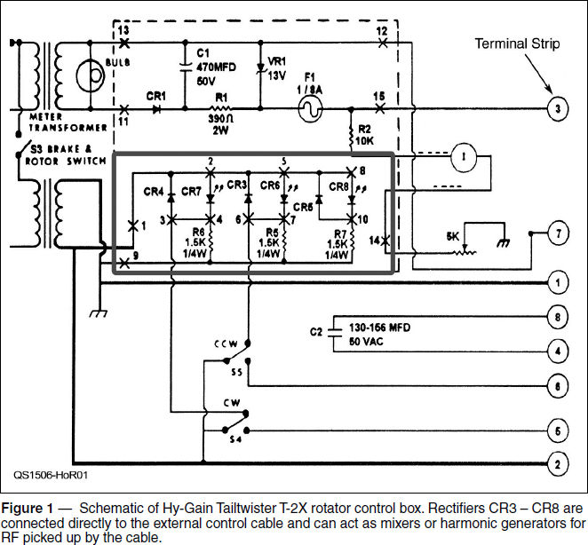
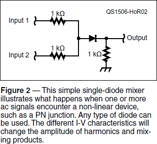

Experiment #149 — Accidental Mixers
When reading about RF interference and intermodulation (aka “intermod”), you will often encounter references to “bad connections” and junctions between dissimilar metals that create rectifiers. Since the discussion usually takes place in the context of sites with multiple transmitters for commercial, broadcast, public safety, and/or ham repeaters, most hams file the information in the “It Can’t Happen Here” folder. I discovered that it certainly can happen “here,” meaning “at my station” and, of course, my education came by accident and from a completely unexpected source.
A Bad Case of RF Grumbles
A few years ago, I put up a new tower and proudly topped it with a two-element 40 meter Yagi (a 40-2CD), a first for me. Like most projects, this one proceeded in stages — the tower went up first, then I put the antenna together and mounted it on a stub mast without a rotator yet installed; that would come later. In the meantime, a “rope-tator” did the job. All was well, the band was full of signals, I worked a bunch of DX, and things were going my way. Next, I installed the Tailtwister (T-2X) rotator — no more rope-tator.
The very next morning, I eagerly switched on the rig but — zut alors! — instead of a normal background crackle, the band was full of S-3 grumbles and garbled voices from end to end. What was this? I looked inside and outside the shack, checked connectors, accessories, and equipment settings, and found nothing. Resigning myself to a long detective adventure, I sat down at the rig and pressed the rotator control box’s Brake Release switch and the grumbles changed to a 120 Hz buzz. Eh?
Sure enough, each time the brake solenoid’s 24 V ac power was applied, the new noises changed to a buzz. I checked the rotator cable, but all connections were solid and resistance measurements through the rotator itself were in the normal range. Staring at the schematic (Figure 1), it finally dawned on me what was going on. The rotator cable was acting as a terrific random-wire antenna, happy to pick up the local AM broadcast station signals and convey them to the control box. (My location on Vashon Island, Washington, was home to seven multi-kilowatt stations within 5 miles of my station!)

The Accidental Mixers
Inside the control box are eight rectifiers, CR1 through CR8, plus a Zener diode, VR1. The problem was being caused by CR3 through CR8, which are connected to the rotator control cable through the direction control switches S4 and S5. Volts of AM broadcast RF were applied directly to those rectifiers, which happily mixed all of those signals together and re-radiated the mixing products across the HF spectrum via the same cable. (I could hear them all the way up to 20 MHz or so.)
With the brake solenoid OFF (S3 open), the rectifiers acted as passive mixers. With the brake solenoid ON (S3 closed) the rectifiers were either cut off or forward biased by 60 Hz ac from the power transformer that turned on the various indicator LEDs — except at the zero-crossings that happened twice per cycle or 120 Hz. During the short window of time when the 60 Hz ac was near zero volts, the diodes could act as mixers again and so the grumbles I was hearing on 40 meters appeared as pulses at 120 Hz.
Now that I knew what the problem was, the solution was simple. I soldered a 0.01 μF, 50 V disc ceramic capacitor across each diode in the control box. No more grumbles! The capacitors routed the RF around the rectifying PN junctions that were acting as mixers and harmonic generators. Since my location was so hot with BC RF, I took the next step and added another capacitor from each terminal strip position to the metal control box enclosure’s outer surface.
Accidents Waiting to Happen
I also realized that the T-2X control box was not the only device in my station with unbypassed rectifiers. I had several accessories, some commercial and some home-built, with LEDs or rectifiers connected directly to control or power cables. A few minutes work with a screwdriver and a soldering iron and all those diodes were “cold” at RF.
Since I hadn’t noticed problems before, what difference did adding the capacitors make on the remote switches? Did I notice any improvement? As far as normal listening, the additional bypassing didn’t change background noise levels dramatically. However, what I did notice was that some of the harmonics from my transmitted signal were now much weaker on some bands.
I am a fan of SO2R (single operator, two-radio) operating in contests (www.dxcoffee.com/eng/2011/09/07/tutorial-so2r-operating-mode or www.k8nd.com/Radio/SO2R/K8ND_SO2R.htm), in which I’m calling CQ on one band and tuning for new stations on another. It’s pretty obvious when you tune across your own harmonics! In some cases, these diodes had been generating harmonics by rectifying RF from the transmitter and re-radiating it via a control cable. The investment of a few pennies per capacitor reduced some of the harmonics quite a bit. (Some were generated by the transmitter directly.) The same improvement applies any time your station is being used for transmitting and receiving at the same time. Multioperator station owners and EOC station managers, are you listening?
Where else besides antenna switches and rotator control boxes can you find these “accidental mixers?” Many places, in fact, and you can see some in Figure 3. All of these circuits are often attached to external control or power cables that act as antennas to pick up RF and re-radiate mixing products or harmonics from rectified RF. Attaching a bypass capacitor across the diode renders it inert at RF.


Look around your shack for power connections and control cables, then be sure the equipment includes measures to block or bypass RF that might be present on those cables. You can also block RF where a control cable enters an enclosure. Connect the bypass capacitors and ferrite beads, cores, or chokes on the outside of the enclosure so that RF never gets into the equipment.
Seeing For Yourself
You can see the effects, too, by connecting the circuit in Figure 2 to some signal generators. Use a silicon 1N4148 diode at first. Apply an audio signal of at least 1 V RMS to Input 1 and use an audio spectrum analysis program such as one of those available at www.dxzone.com/catalog/Software/Spectrum_analyzers. Vary the amplitude and frequency of the signal to see the effect on harmonic content. Now connect a second signal to Input 2 and look at the mixing products — yikes! (The output of an HF receiver tuned to an AM carrier makes an impromptu audio signal source.) Try different types of diodes, such as germanium (1N34A) or Schottky (1N581x series), or an LED to see how various types of PN junctions influence the resulting spectrum.
Avoiding Field Day Accidents
Even if you never transmit and receive at the same time from your home station, taking your gear to Field Day can be a wholly different story! At a multi-station site with antennas close together, RF pickup can be quite strong. Station configuration is often, well, “Field Day-style,” meaning more or less a lash-up, with RF current flowing everywhere. Making your gear “RF-proof” is a great idea before you get to the Field Day site or the public service event. For the cost of a few capacitors, you can save yourself a lot of headaches!